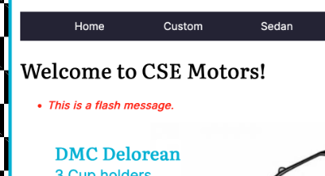

Sessions & Messages
What is a Session?
The interaction between a browser and a web server is "stateless". This means that after a browser sends a request to the server, and the server responds, the interaction is "forgotten". A session is a means of changing from a "stateless" situation to a "stateful" interaction. More often than not, sessions are used by the server to remember a client who has "authenticated" (logged in) so the client does not have to log in again, every time they send another request. In our instance, we will not use a session for authentication, rather we will use the session to pass messages from one interaction to another within the server, or, in other words, it is providing a means for persistence from one part of the application to another.
What's a Message?
In this case, it is exactly what you think. It is text that conveys some meaning, typically to indicate the outcome of a process. For example, if a log in process is successful, the message could be, "You're logged in." On the other hand, if the log in process failed, the message could be, "Sorry, check your credentials and try again." In this activity, you will implement a "flash" message. This is a unique implementation of messages that are stored in the session, displayed in a view, then removed from the session automatically. Like a "flash" on a camera, it fires then disappears. That is how our flash messages will work.
Video Overview
The video provides a general overview of the activity, but does not contain the detail needed to complete each process. Watch the video to obtain a general idea, but follow the written steps to complete the activity. This is the Transcript of the video.
Four New Packages
As with other functionality, we will benefit from the work of others by using packages to implement sessions and messages. The packages we will install are:
Do the following:- Open the VSC terminal panel.
- Type the following:
press "Enter"pnpm add express-session connect-pg-simple express-messages connect-flash - Wait for the installation to complete.
- Close the terminal panel.
Apply the Packages
With the packages installed, let's get them added to the application. We'll go through each package individually.
Require the Session package and DB connection
- Find and open the server.js file.
- At the top, in the "Require Statements" area, add the session, and access to the database connection, like so:
You may be asking, "What about the other packages?" We'll add them later, in different locations.const session = require("express-session") const pool = require('./database/') - Ensure there are no errors. Save the file.
connect-pg-simple
Express sessions should not be stored in memory. The preferred method is to place the session information into a database. Since we already have a PostgreSQL database present, we'll use it. To make it easy for the session to interact with the database, the "connect-pg-simple" package handles everything for us. It is a package built specifically to do this. It does not have a setup just for itself, rather it is part of the session configuration.
express-session
Of the packages, the express-session is the most involved to set up, so we'll take it step-by-step.
- Still working in the server.js file.
- Scroll down to the "View Engine and Templates" area. Add several empty lines above it. Now, add the following code:
/* ***********************
* Middleware
* ************************/
app.use(session({
store: new (require('connect-pg-simple')(session))({
createTableIfMissing: true,
pool,
}),
secret: process.env.SESSION_SECRET,
resave: true,
saveUninitialized: true,
name: 'sessionId',
}))- Ensure there are no errors. Save the file.
-
An Explanation
- Lines 1-3 - a section comment.
- Line 4 - invokes the app.use() function and indicates the session is to be applied. Recall that app.use() applies whatever is being invoked throughout the entire application.
- Line 5 - store is referring to where the session data will be stored. In this code, we are creating a new session table in our PostgreSQL database using the "connect-pg-simple" package, which is being required at this point. Notice the "{" at the end of the line, indicated a new object being sent in to the connection with configuration information.
- Line 6 - tells the session to create a "session" table in the database if it does not already exist.
- Line 7 - uses our database connection pool to interact with the database server.
- Line 8 - closes the configuration data object and the "new" session store creation function started on line 5.
- Line 9 - indicates a "secret" name - value pair that will be used to protect the session. We will create the value of the secret in the .env file later in this activity.
- Line 10 - This session for the session in the database is typically "false". But, because we are using "flash" messages we need to resave the session table after each message, so it must be set to "true".
- Line 11 - this setting is important to the creation process when the session is first created.
- Line 12 - this is the "name" we are assigning to the unique "id" that will be created for each session. In order to maintain "state", the session id will be stored into a cookie and passed back and forth from the server to the browser. We will not create the cookie, the session package will do so. The only item it will contain is the name "sessionId" and the actual value of the ID.
- Line 13 - ends the session creation and app.use function.
Session Secret
In the session middleware function, line 9, a secret value was indicated. We need to create that value.
- Open the .env file from the root of the project.
- Beneath the existing name - value pairs add the following:
SESSION_SECRET= - With the name in place, let's create the actual value for the SESSION_SECRET. It is critical that the secret value be random, so that it cannot be guessed. We will use a built-in Express function to do this for us:
- Open a new VSC terminal.
- Type "node", press "Enter".
- Type "
require('crypto').randomBytes(64).toString('hex')", press "Enter". - Copy the generated string, including the single quotes on either end, and paste it as the value for the SESSION_SECRET.
- Type "Control + C" in the terminal window to exit Node. Reduce or close the terminal.
- Ensure that no warnings or errors are indicated in the .env file.
- Save the file.
Recall that the .env file is ONLY for testing locally. Because it is our intent to deploy this to a live server, the values that were just created need to also be present in our production environment. Let's do that now.
Render.com Environment Variables
- In a browser, login to render.com using your GitHub sign-in.
- In the dashboard, click on the web server.
- In the dashboard, click on Environment on the left-side of the screen.
- Click the Add Environment Variable button.
- In the first empty Key text box, copy and paste the name from your own .env file: SESSION_SECRET
- Copy the actual value from the .env file for the SESSION_SECRET, and paste it into the "value" textarea. Do NOT include the equal sign or surrounding quotes, just the string between the quotes.
- Visually compare everything from the two locations for identical values.
- Click the "Save Changes" button in the render.com window.
- When the save is complete, ensure that the new item has a small checkmark in the bottom right-corner of the "value" textarea.
- The value will be replaced by bullets to hide the value from anyone who may look over your shoulder. To view the value, hover over or click in the textarea.
Test
Time to test that the session starts and everything works. Do the following:
- Check that the server.js file has been saved.
- Start the development server:
pnpm run dev, press "Enter". - In a browser tab, go to your site:
http://localhost:5500. - Using the web developer toolbar select Cookies > View Cookie Information.
- There should be a cookie named "sessionId" and it should indicate that it expires at the end of the session.
- If the cookie is present, things worked. If not, reach out and get some help after reviewing your code and comparing it against the code shown in the activity.
Message Middleware
With the session operational, we can now implement the messaging middleware.
- Still in the server.js file, create a few empty lines beneath the session code you just wrote.
- In this empty space add the following code:
// Express Messages Middleware app.use(require('connect-flash')()) app.use(function(req, res, next){ res.locals.messages = require('express-messages')(req, res) next() }) -
An Explanation
- Line 1 - a comment.
- Line 2 - requires the connect-flash package, within an
app.usefunction, making it accessible throughout the application. - Line 3 -
app.useis applied and a function is passed in as a parameter. The funtion accepts the request, response and next objects as parameters. - Line 4 - The express-messages package is required as a function. The function accepts the request and response objects as parameters. The functionality of the this function is assigned to the response object, using the "locals" option and a name of "messages". This allows any message to be stored into the response, making it available in a view.
- Line 5 - calls the "next()" function, passing control to the next piece of middleware in the application. Ultimately, this allows messages to be set, then pass on to the next process. Eventually, when a view is built, the message can be displayed in it.
- Line 6 - ends the function and app.use structure.
- Visually check your code against the provided example.
- Ensure there are no warnings or errors.
- Save the file.
Set up the message code in a view
In order to see a message, we must set up the EJS code block in the view. For now, we do so in the "home" view. Keep in mind, this will need to be done in additional views eventually.
- Find and open the index.ejs view in the views folder.
- In the view should be an <h1> element for the view.
- Create an empty line beneath the heading and add this code block:
<%- messages() %> - If you were to go to the Express-Messages documentation, and look specifically at the Rendering Messages section, you will find that the code block will actually set up an unordered list, to display a list of messages. In other words, in the package is a loop to build the structure to display one or many messages, depending on how many have been set.
- Check for errors and fix them if found.
- Save the view.
Create a Message and Test
With the package configured and a means to display a message in place, let's create a message and make sure it works.
- Find and open the baseController.js file.
- In the buildHome function, create an empty line just above the
res.render(....)line. - Add this message to the empty line:
req.flash("notice", "This is a flash message.") - You'll notice that
req.flash()uses the "flash" package to assign the message to the request object. - There are two parameters. The first parameter indicates the "type" of message. This can be anything you want it to be. However, when you run the rest, if you right-click on the message in the view, you will find that this value is added as a class to the unordered list. You can write CSS rules using these classes to style the messages. You should do this! You should also pre-determine some simple names to use consistently, for example, "notice" can just be for information, while "error" would indicate something needs to be fixed, etc....
- The second parameter is the actual message to be displayed. It is a string, and must be in quotes.
- Save the file.
- Start the server in the terminal:
pnpm run dev - In a browser tab, go to the home view. The message should be visible beneath the main heading.

- Right-click and inspect it to see the unordered list and the attached class name.
- If everything worked, "Well Done!"
- Once you're sure things worked, return to the baseController and remove the flash message creation line. It was only for testing.
- If things didn't work, review the code or get help from a member of your learning team or the TA, or the professor.
- Stop the server.
Conclusion
While this may seem like a lot of setup, it is a one-time event. From now on, if you need to send a message from a controller to a view, when using res.render(), or res.redirect(), you can. It makes moving messages around very easy. An important part of the UX (user experience) is always being informed. This will help that to happen. In addition, remember that once the message has been displayed, it is cleaned up automatically.